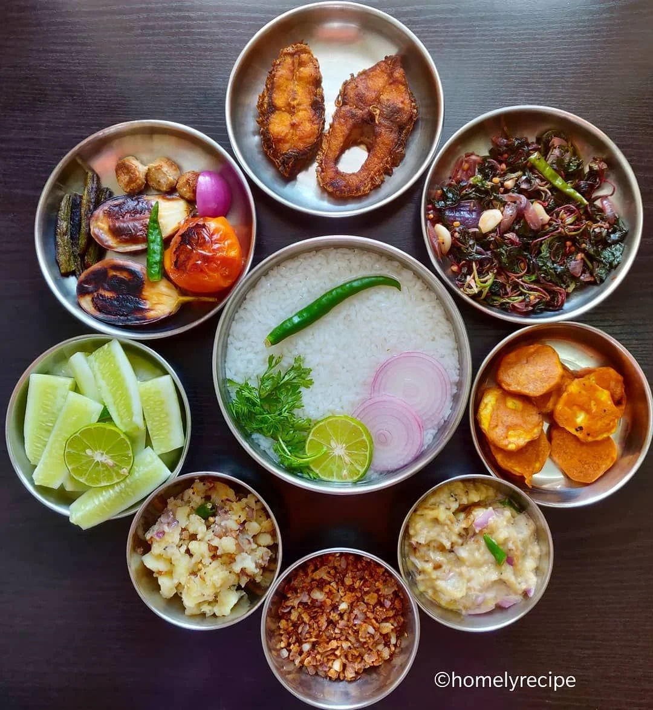
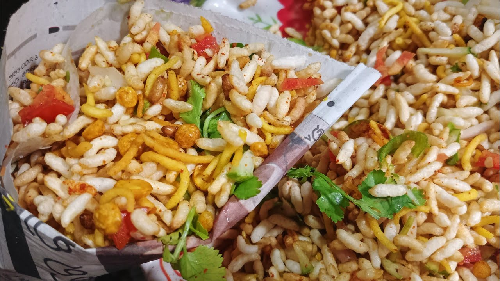

Pakhala
Pakhala, a traditional Odia dish, is a refreshing meal of fermented rice soaked in water. Seasoned with salt and sometimes tempered with curry leaves, green chilies, and mustard seeds, it offers a cooling and nutritious option, especially during hot summers. Pakhala exemplifies Odisha's culinary simplicity and cultural heritage.
Jhal mudhi
Jhal mudhi is a beloved snack from Odisha, featuring puffed rice mixed with spicy seasoning. It typically includes mustard oil, turmeric, curry leaves, peanuts, and sometimes diced vegetables or fried dal. This crunchy and flavorful treat showcases Odia cuisine's vibrant flavors and is enjoyed as a light, spicy snack or accompaniment.
Chena Poda

Chena Poda is a delectable dessert hailing from Odisha, India, known for its caramelized crust and moist, spongy interior. Made from paneer (Indian cottage cheese), sugar, cardamom, and sometimes nuts, it is baked to perfection, imparting a rich, smoky flavor. Chena Poda is a cherished delicacy that epitomizes Odia culinary expertise and sweet traditions.